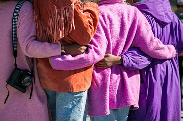

STARTPROjecten richt zich op 5 aandachtsgebieden. De projecten zullen steeds aansluiten bij 1 of meerdere aandachtsgebieden.
Onderhouden van netwerken en IT infrastructuur van scholen
Ondersteuning aanbieden aan scholen om hun IT infrastructuur te onderhouden en uit te breiden (computers, laptops, media-apparatuur), netwerken te onderhouden en een helpdesk voor leerkrachten en personeel uit te bouwen.
 Lees verder
Lees verder
Mogelijkheden stage & werk in werkervaringsprojecten, deeleconomie en sociale economie in Brussel
Aan schoolverlaters en jongeren een overzicht en inkijk geven in de mogelijkheden om stage en/of werk te vinden in de verschillende Brusselse (sociaal) economie-projecten.

Lees verder ...
Acties opzetten om schoolverlaters te ondersteunen
De school achter de rug maar geen stage of werk? Wij wensen stappen te zetten naar een netwerk van mogelijkheden voor Brusselse schoolverlaters.
Lees verder ...
Onderzoek verrichten naar een mogelijke samenwerking met Brusselse actoren
Om uitval van jongeren, die stappen zetten naar de middenjury, te voorkomen en de werking te versterken van de organisaties die Brusselse jongeren begeleiden naar de examencommissie (middenjury).
Lees verder ...
Opstarten van een Fablab - The IT Garage
De activiteitsdomeinen van de IT Garage zijn: 3D printing, Robotprogrammatie en Virtual Reality.
Lees verder ...

i.s.m. de vlaamse gemeenschapscommissie